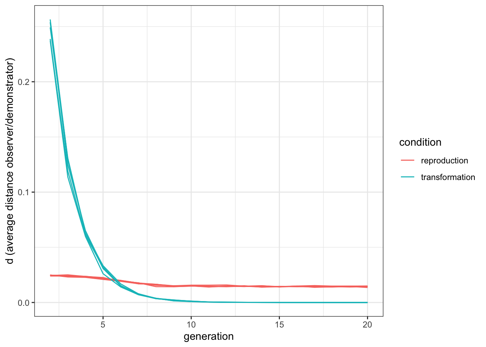

9 Reproduction and transformation
To be considered “cultural”, ideas, behaviours, and artifacts need to be sufficiently stable in time. The version of Little Red Riding Hood we heard now is part of a long cultural transmission chain that includes all the other versions of the tale because they all share enough features to be considered the same tale. Similarly, the lasagne I cooked yesterday are part of a long, intricate, chain of cultural transmission events, where all the products are stable enough that we can consider one cultural trait as lasagne. Boundaries are muddled for many traits: while some artifacts can be the exact replica of each other, no two identical lasagne exist. In any case, the question we explore in this chapter is: how does this stability is brought about? In the models so far, as much as in the majority of models in cultural evolution, we assumed that traits are copied from one (cultural) generation to another with enough fidelity to assure a relative stability. This is a useful assumption and, in many case, a good approximation of what happens in reality.
However, cultural traits can also be stable not because they are copied with high-fidelity, but also because when passing from an individual to another they are independently reconstructed in the same way or, another way to say it, they become similar to each other through a process of convergent transformation. Think about whistling. We do learn to whistle from each other through a process of cultural transmission (we want to reproduce what others do), but the configuration of the muscles in the mouth is not something that we copy directly. Still, there are few ways to effectively whistle, so they we likely end up with the same - or similar - configuration. (Notice we can also actually copy the exact configuration and, indeed, there are specialised whistling techniques for which it is required. As we will discuss later, copying and reconstructing are not two alternative processes, but they both concur to cultural evolution.)
To have a better grasp of the consequence of this idea we can, as usual, try to model a very simple case, where cultural stability can be obtained with a process of copying and selection of a model, as we did in many of the previous chapters, or with convergent transformation, where individuals are not very good at copying, or at selecting models, but they tend to transform the trait in the same way.
Let’s imagine a population with a single trait, a continuous trait \(P\), that can have values between \(0\) and \(1\). At the beginning of the simulations, \(P\) is uniformly distributed in the population. Let’s say the optimal value of \(P\) is \(1\) (this is convenient for the code, but the exact value is not important). You can think to \(P\) as, for example, how sharp is a knife: the more the better.
library(tidyverse)
set.seed(111)
N <- 1000
population <- tibble(P = runif(N))Now, we can write the familiar function where individuals copy the trait from the previous generation with one of the biases we explored earlier in the book. In Chapter 3, for example, we showed how a direct bias for one of two discrete cultural traits could make it spread and go to fixation. We can do something similar here, with the difference that the trait is continuous and the bias needs to be a preference for traits close to the optimal value. (Notice the code would be equivalent - and we would obtain the same effect of convergence to optimal value - thinking in terms of other methods of cultural selection, e.g. and indirect bias towards successful demonstrators, that are successful as they have a \(P\) close to the optimal).
reproduction <- function(N, t_max, r_max, mu) {
output <- tibble(generation = rep(1:t_max, r_max), p = rep(NA, t_max * r_max), run = as.factor(rep(1:r_max, each = t_max)))
for (r in 1:r_max) {
population <- tibble(P = runif(N))
# create first generation
output[output$generation == 1 & output$run == r, ]$p <- sum(population$P) / N # add first generation's p for run r
for (t in 2:t_max) {
previous_population <- population # copy individuals to previous_population tibble
demonstrators <- tibble(P1 = sample(previous_population$P, N, replace = TRUE), P2 = sample(previous_population$P, N, replace = TRUE))
copy <- pmax(demonstrators$P1, demonstrators$P2)
population$P <- copy + runif(N, -mu, +mu)
population$P[population$P > 1] <- 1
population$P[population$P < 0] <- 0
output[output$generation == t & output$run == r, ]$p <- sum(population$P) / N # get p and put it into output slot for this generation t and run r
}
}
output # export data from function
}The function is similar to what we have already done several times. Let’s have a look at the few differences. First, we find again the parameter \(\mu\), as done for biased mutation and innovation in previous chapters. Similarly, it implements here the error in copying: with respect to the \(P\) of the demonstrator chosen, the new trait will vary of maximum of \(\mu\), through the instruction runif(N, -mu, +mu). The two following lines just keep the traits in the boundaries between \(0\) and \(1\). The second difference is in the selection of the trait to copy. Here each individual sample two traits (or demonstrators) from the previous generation, and simply copies the one with the trait closer to the optimal value of \(1\).
We can now run the simulation, and plot it with a slightly modified function plot_multiple_runs_p() (we just need to change the label for y-axis). We use a low value for the copying error such as \(\mu=0.05\).
plot_multiple_runs_p <- function(data_model) {
ggplot(data = data_model, aes(y = p, x = generation)) +
geom_line(aes(colour = run)) +
stat_summary(fun.y = mean, geom = "line", size = 1) +
ylim(c(0, 1)) +
theme_bw() +
labs(y = "p (average value of P)")
}data_model <- reproduction(N = 1000, t_max = 20, r_max = 5, mu = 0.05)
plot_multiple_runs_p(data_model)
Even with a weak form of selection (sampling two traits and choosing the better one) the population converges on the optimal value quickly, in only around ten cultural generations.
Now we can write another function where convergent transformation produces the same effect.
transformation <- function(N, t_max, r_max) {
output <- tibble(generation = rep(1:t_max, r_max), p = rep(NA, t_max * r_max), run = as.factor(rep(1:r_max, each = t_max)))
for (r in 1:r_max) {
population <- tibble(P = runif(N))
# create first generation
output[output$generation == 1 & output$run == r, ]$p <- sum(population$P) / N # add first generation's p for run r
for (t in 2:t_max) {
previous_population <- population # copy individuals to previous_population tibble
demonstrators <- tibble(P = sample(previous_population$P, N, replace = TRUE))
population$P <- demonstrators$P + runif(N, max = 1-demonstrators$P)
output[output$generation == t & output$run == r, ]$p <- sum(population$P) / N # get p and put it into output slot for this generation t and run r
}
}
output # export data from function
}There is only a line we need to pay attention to: the values of \(P\) of the new generation are calculated as demonstrators$P + runif(N, max = 1-demonstrators$P). This means that the individuals of the new population copy the old generation, but they are not particularly good. They take a value of \(P\) randomly drawn between the value of the demonstrator and the optimal \(P=1\). Thus, if they attempt to copy a demonstrator with \(P=0.1\), their “error” can be as large as 0.9. Let’s run the simulations.
data_model <- transformation(N = 1000, t_max = 20, r_max = 5)
plot_multiple_runs_p(data_model)
As the transformations tend to all converge in the same direction, the results are equivalent to the previous model. It does not matter when exactly the population reaches stability at \(P=1\), as this depends on the specific implementation choices, for example the strength of cultural selection in the first model, or how big can be the “jump” of the transformation in the second model.
When we see cultural traits in real life, we are observing systems in a state analogous to what happens on the right side of the two plots, where individuals reproduce traits one similar to the other. As we mentioned earlier in the chapter, both faithful copying and transformation can be important for culture, and their importance can depend from the specific features we are interested to track, or from the cultural domain. How can we distinguish the relative importance of the two processes?
9.1 Emergent similarity
QUESTION
We can rewrite the reproduction() and transformation() functions adding a further output, that is, how similar are the traits that the new generation show to the traits that they had copied from the previous. We thus add a variable d (as in “distance”) in our output tibble, and we calculate this value at the end of each generation as sum(abs(population$P - copy)) / N.
reproduction <- function(N, t_max, r_max, mu) {
output <- tibble(generation = rep(1:t_max, r_max), p = rep(NA, t_max * r_max), run = as.factor(rep(1:r_max, each = t_max)), d = rep(NA, t_max * r_max))
for (r in 1:r_max) {
population <- tibble(P = runif(N))
# create first generation
output[output$generation == 1 & output$run == r, ]$p <- sum(population$P) / N # add first generation's p for run r
for (t in 2:t_max) {
previous_population <- population # copy individuals to previous_population tibble
demonstrators <- tibble(P1 = sample(previous_population$P, N, replace = TRUE), P2 = sample(previous_population$P, N, replace = TRUE))
copy <- pmax(demonstrators$P1, demonstrators$P2)
population$P <- copy + runif(N, -mu, +mu)
population$P[population$P > 1] <- 1
population$P[population$P < 0] <- 0
output[output$generation == t & output$run == r, ]$p <- sum(population$P) / N # get p and put it into output slot for this generation t and run r
output[output$generation == t & output$run == r, ]$d <- sum(abs(population$P - copy)) / N
}
}
output # export data from function
}We do the same for the transformation() function, and we can run again both simulations.
transformation <- function(N, t_max, r_max) {
output <- tibble(generation = rep(1:t_max, r_max), p = rep(NA, t_max * r_max), run = as.factor(rep(1:r_max, each = t_max)), d = rep(NA, t_max * r_max))
for (r in 1:r_max) {
population <- tibble(P = runif(N))
# create first generation
output[output$generation == 1 & output$run == r, ]$p <- sum(population$P) / N # add first generation's p for run r
for (t in 2:t_max) {
previous_population <- population # copy individuals to previous_population tibble
demonstrators <- tibble(P = sample(previous_population$P, N, replace = TRUE))
population$P <- demonstrators$P + runif(N, max = 1-demonstrators$P)
output[output$generation == t & output$run == r, ]$p <- sum(population$P) / N # get p and put it into output slot for this generation t and run r
output[output$generation == t & output$run == r, ]$d <- sum(abs(population$P - demonstrators$P)) / N
}
}
output # export data from function
}data_model_reproduction <- reproduction(N = 1000, t_max = 20, r_max = 5, mu = 0.05)
data_model_transformation <- transformation(N = 1000, t_max = 20, r_max = 5)We already know the results with repsect to the value of \(P\), but now we are interested in comparing if and how the values for d change in time in the two conditions. For this, we write an ad hoc plotting function, that takes the data from the two outputs and plot them in the same graph. Notice the na.omit() function in the first line: the data on d is NA for the first generation, because there is no previous generation from which to take the measure, so we want to exclude it from our plot, and start from generation number 2. For this reason, all the other values are riscaled and, in particular, the variable generation starts from 2.
data_to_plot <- tibble(distance = c(na.omit(data_model_reproduction$d), na.omit(data_model_transformation$d)),
condition = rep(c("reproduction", "transformation"), each = 95),
generation = rep(2:20,10),
run = as.factor(rep(1:10, each = 19)))
ggplot(data = data_to_plot, aes(y = distance, x = generation, group = run, color = condition)) +
geom_line() +
theme_bw() +
labs(y = "d (average distance observer/demonstrator)")
DESCRIPTION OF THE RESULTS
9.2 The cultural Price equation
TO DO